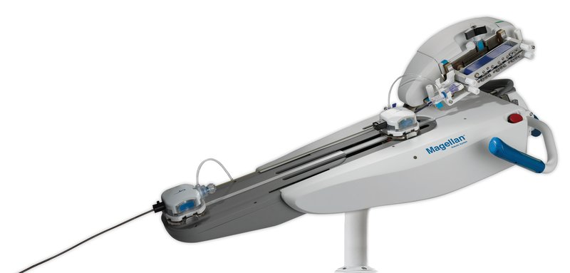

Commercial and clinical-stage systems · magellan_hansen2012
Magellan
Magellan Robotic System

1 / 5


- Family
- Commercial and clinical-stage systems (commercial)
- Devices
- proprietary Magellan robotic catheter giving distal tip control of guidewires, catheters and guide (brochure p. 1); steerable sheath 9 F and leader 6 F; guidewire 0.014-0.035 in
- Degrees of freedom
- 6 (li2024_design Table I)
- Push
- Tip-actuated
- Twist
- Tendon bending only
- Tested up to
- Human
- Sim-to-real
- None found — No simulation-trained controller found for this robot.
Testing
- Highest level
- Human
- What was tested
- >1000 cases clinically (huistra2026_evaluation intro)
- Key numbers
- FDA approval 2012 for PVI as written by crinnion2022_robotics (a 510(k) clearance is likely; record not opened)
Mechanism
- Push (translation)
- tendon/tip-actuation
- Twist (rotation)
- belt friction drive for guidewire; tendon-driven catheters
- Device range
- N.R.
- Target anatomy
- multi-specialty peripheral vascular (indication: navigation to anatomical targets in the peripheral vasculature, then a conduit for manual placement of therapeutic devices, hansen2016_magellan_BROCHURE p. 2); aortic; neurovascular case series (23 pts per chen2023_operating; 9 angiograms + 18 interventions per miyachi2025_robotics - conflict)
Sensing and interface
- Force sensing
- none
- Leader and haptics
- no: remote physician workstation away from the radiation source (brochure p. 1)
- Imaging
- N.R.
- Sterility
- N.R.
Size
- Footprint (mm)
- N.R. (robotic arm at the patient table + remote physician workstation; 'no specialized construction necessary', brochure p. 1)
- Mass (kg)
- N.R.
Simulation
- Simulation model
- none found
- Sim-trained controller
- none found
Versions
- Lineage
- Magellan Robotic System with the Magellan robotic catheter, formerly Northstar robotic catheter (brochure LT0040 Rev C, (c) 2012); 9 F sheath / 6 F leader
Sources
- Robotic Systems Design in Endovascular Treatment · IEEE Transactions on Medical Robotics and Bionics, 2024 · doi:10.1109/tmrb.2024.3377374 [li2024_design]
- The Critical Technologies of Vascular Interventional Robotic Catheterization: A Review · IEEE Sensors Journal, 2023 · doi:10.1109/jsen.2023.3320356 [ren2023_critical]
- Robotics in neurointerventional surgery: a systematic review of the literature · Journal of NeuroInterventional Surgery, 2021 · doi:10.1136/neurintsurg-2021-018096 [crinnion2022_robotics]
- Robotic Systems in Cardiovascular Interventions: Evolving Platforms and the Path Forward · Methodist DeBakey Cardiovascular Journal, 2025 · doi:10.14797/mdcvj.1652 [mandhumula2025_robotic]
- The Catheter and Guidewire Operating Systems of Vascular Interventional Surgical Robots: A Systematic Review · IEEE Transactions on Medical Robotics and Bionics, 2023 · doi:10.1109/tmrb.2023.3272049 [chen2023_operating]
- Robotics for Neuroendovascular Therapy · Journal of Neuroendovascular Therapy, 2025 · doi:10.5797/jnet.ra.2024-0112 [miyachi2025_robotics]
- Magellan Robotic System brochure (LT0040 Rev C) · no DOI on file [hansen2016_magellan_BROCHURE]
Notes
- Notes
- Withdrawn after Auris acquisition (2019 per mandhumula2025_robotic; the same source also says 2016). | X2 2026-11-08: Magellan brochure read in full: no numbers beyond cited studies (Bismuth 2011 first-in-man iliofemoral, Riga 2010/2011).
This record
- Read level
- abstract — brochure (full, hansen2016_magellan_BROCHURE); abstract (S8)
- Picture
- Hansen Medical "Magellan Robotic System Brochure" p2 embedded image xref 23 with its soft mask, from https://web.archive.org/web/2016id_/http://www.hansenmedical.com:80/sites/default/files/blob-file/Hansen-Medical-Magellan-Robotic-System-Brochure.pdf ↗ — licence: press image (Hansen Medical marketing brochure, archived); grade A
- Picture changes
- image + soft mask, cropped (20,90)-(2172,1120), flattened on white; cut = brochure soft mask
- Found by
- commercial: Search of commercial and clinical-stage systems.
- Data
- JSON · YAML:
records/robots/magellan_hansen2012.yaml - Correction
- Suggest a correction [repository not created yet]